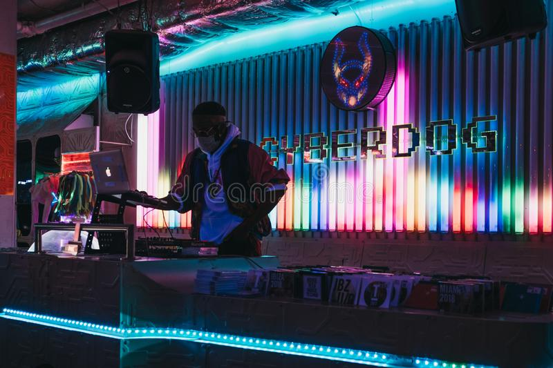

This project took me about 5 hours to complete. I had to go to the store and buy my materials:
I chose poplar wood over pine because pine is much easier to scratch up when working with the material. I started cut a 1x3x96 in. board into two pieces (1x3x48 in.) and cut the edges at 45-degree angles. I cut the side boards at 1x6x56 in. I then trimmed 3 in. off the 6 in. width for only 48 in. of the 1x6x56 in. board so the side boards would match the top board (at 3 in.) and leave the last 8 in. of the 1x6x56 in. board 6 in. wide. The reason was to create a box for all the “behind-the-scenes” electrical work will be placed. I then cut two 1x6x48 in. boards to go on the top and bottom of the box portion of my frame. I used two screws to connect all the sides together (2 x 4 = 8 screws). I then added some 1x2x46.5 in. boards to sit inside the frame at the top and sides so I can nail the panel on (this is where the LED lights will go). Lastly, I had to cut 1.5 in. off my 48x48 in. panel on the top and right side so it can fit inside the frame. The results are shown below. The last step is to paint it white so we can get started on adding the LEDs.
Have you ever wanted to experience music in a different way? Have you ever wondered how music looks, tastes, or feels? Well… taste might be a bit hard to create but what we can create is a way for you to visualize music as if it were alive right in front of you. Picture an EDM concert – the crowd dancing, the DJ behind his booth, the lights flashing to the beat, and the big colors screen behind the DJ. With this DIY project, you will be able to recreate this experience I your own home. The goal with the LED Light Wall is to display music visually so you can “see” the beats, the vocals, and the sound of music. My idea was inspired by a shop called Cyberdog in London that I visited back in 2017. There was a DJ booth with an equalizer display located behind. When the DJ played music, the lights would display an equalizer, or a spectrum of low and high frequencies whenever they were detected by a microphone sensor. The bass, or low frequencies, would show up on the left side and the vocals and high pitches, or higher frequencies, would show up in the middle and right side of the spectrum. I could tell when beats were stronger, or vocals were louder by watching the lights increase or decrease when music became quieter. Today, I not only want to recreate this visualization of music but also push my creative mind to design more abstract and immersive ways to visualize music. Stay tuned to learn more about how to make your own LED Light Wall as I will be sharing my step-by-step process with you in upcoming blogs.
